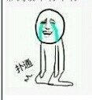
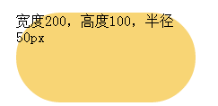

前言
今天来聊聊这个border-radius属性，radius的英文意思是弧度的意思，而国人更喜欢称之为圆角，因为它可以使得我们的边框有棱有角。当年前辈们都是用图片君搞定圆角的年代或用一条条边框构造的年代已经一去不复返，而移动互联网的高速发展为border-radius属性的飞速发展，so今天就来聊聊圆角边框。虽然英文翻译过来叫做半径弧度，但是为了能让大家更加熟悉，下文统一使用圆角半径来代替。
相关介绍
这个borde-radius属性其实也是一个简写值，它分别是 border-top-left-radius（左上圆角半径）, border-top-right-radius（右上圆角半径）, border-bottom-right-radius （右下圆角半径）,border-bottom-left-radius（左下圆角半径），如下图所示：
说到半径，我突然想起来了以前数学中学过关于圆跟半径的关系，百科如下：
在圆中，连接圆心和圆上任意一点的线段叫做圆的半径。通常用字母r来表示。
在球中，连接球心和球面上任意一点的线段叫做球的半径。
正多边形所在的外接圆的半径叫做圆内接正多边形的半径。
css中的radius多少也跟圆扯上关系，不过要分椭圆还是圆，因为css中分了垂直半径和水平半径。而几何中的圆只要确定了半径就可以画出一个圆出来。css中圆角，当使用一个值时，确定为圆角；当使用两个值时，确定一个椭圆圆角，但是不管是圆角还是椭圆角其实都有点像是背景和设置这个圆角半径的重叠产生的，浏览器会去除他们的没有交集的部分，留下有交集的部分，像CDR里面两个有交集的图形使用的相交。
可能一开始很难了解，不妨往下看吧。
说完了大概的东东，那么问题来了，圆角边框具体值有哪些，莫急少年，上w3c找码去。
对于border-radius，w3c的解释在右侧：
border-*-radius
| 属性名: | border-top-left-radius, border-top-right-radius, border-bottom-right-radius, border-bottom-left-radius |
|---|---|
| 属性值: | [ <length> | <percentage> ]{1,2} |
| 初始值: | 0 |
| 应用于: | 除表单元格边框为collapse的所有元素 |
| 继承性: | 无 |
| 百分比: | 根据盒子边框border-box的宽度. |
| 计算值: | 两个长度，分别 <length> 或 percentages |
w3c属性值详解：
[ <length> | <percentage> ]：必须出现一个值，可长度可百分比，比如：border-top-left-radius:5px,border-top-left-radius:5px 50%都是可行
{1,2}： 表示他们的值最小可以重复一次，最大可重复两次。假如只有一个值，表示圆角，那么它的水平距离和垂直距离相等，即第二个值复制第一个值；假如是两个值，那么确定一个椭圆角，第一个值椭圆的水平半径，第二值为椭圆的垂直半径，说起来有点拗口，直接上图：
只有1个值，如：border-top-left-radius:50px，表示半径为50px圆，如图：
标注错误了，盒子尺寸为：300*100
假如有两个值，如：border-top-left-radius:50px 100px，表示水平半径为50px，垂直半径为100px的椭圆，如图：
同理 border-top-right-radius（右上圆角半径）, border-bottom-right-radius （右下圆角半径）,border-bottom-left-radius（左下圆角半径），也是如此。你只要记住当某个角为一个值时，确定是一个圆，当使用两个值确定一个椭圆。
你可以轻戳右侧的demo：左上角为圆角和椭圆角demo
手机党↓
了解4个角的工作原理，那么是是时候来了解一下全局圆角的属性值了。
| 属性名: | border-radius |
|---|---|
| 属性值: | [<length>|<percentage>]{1,4} [ / [<length>|<percentage>]{1,4} ]? |
| 初始值: | 详情看下表各单元值 |
| 应用于: | 除表单元格边框为collapse的所有元素 |
| 继承性: | 无 |
| 百分比: | 根据盒子边框border-box的宽度. |
| 计算值: | 详情看下表各单元值 |
w3c属性值详解
1、[<length>|<percentage>]：表示圆角的半径长度，必须出现其中一个值。
2、{1,4}：前面的长度值或者百分比，最小重复一次，最大可重复4次，如：border-radius:5pxborder-radius:5px 10pxborder-radius:5px 10px 15pxborder-radius:5px 10px 15px 20px
3、[ / [<length>|<percentage>]{1,4} ]：表示假如想要出现中括号包含的值，那么要用 / 来连接起来，比如:border-radius:5px 10px 15px 20px / 5px 10px 15px 20px其实后面这4个值就是控制其垂直半径，规定圆角是椭圆角还是圆形角。
4、?：表示前面的被中括号[]包围的这一串数字是可选的，可出现可不出现。
以下没有特别说明，盒子的尺寸200*100，边框宽度1px，放大200%下所见。
1个值：border-radius:5px，那么左上角、右上角、右下角、左下角的圆角半径为5px的圆。即，值复制，第二、第三、第四个值都是复制第一个值。
2个值：border-radius:5px 10px，那么左上和右下角、右上和左下角圆的半径相同，即第三个复制第一个，第四个复制第二个的值。
3个值：border-radius:5px 10px 15px，那么左上角半径为5px的圆，右上角和左下角半径为10px的圆，右下角半径为15px的圆，即第四个复制第二个的值。
4个值：border-radius:5px 10px 15px 20px，那么左上角半径为5px的圆，右上角半径为10px的圆，右下角半径为15px的圆，左下角半径为20的圆，这里的值没有复制。

你可以轻戳右侧的demo：4种数值的圆角demo
手机党↓
其实提到值复制，之前我专门将到了margin和padding这两个属性的简写值含义，其实看见css语法中有{1,4}就说明，假如某个值缺省，那么它就会复制另外一个值来作为自己的值，传送门：分析margin和padding简写值
刚刚前面第3点已经提到了，斜扛 “/” 符号后面的4个值可选，假如要选，那么必须用斜扛符号”/”来分隔开来，斜扛符号后面的值确定一个椭圆的垂直半径，假如border-radius:5px / 5px 10px 15px 20px说明四个角的垂直半径分别为5px，10px，15px，20px。跟上面的一样，这4个垂直半径值对应的角是依次分别是 border-top-left-radius（左上圆角垂直半径）, border-top-right-radius（右上圆角垂直半径）, border-bottom-right-radius （右下圆角垂直半径）,border-bottom-left-radius（左下圆角垂直半径）
1个值：border-radius:5px/5px，那么其水平半径和垂直半径相等，故为圆，如图
2个值：border-radius:5px/5px 10px，那么其左上角和右下角水平半径和垂直半径为5px的圆，右上角和左下角水平半径为5px，垂直半径为10px的椭圆，如图
3个值：border-radius:5px/5px 10px 15px，那么其左上角半径为5px的圆，右上角和左下角水平半径为5px，垂直半径为10px的椭圆，右下角水平半径为5px，垂直半径为15px的椭圆，如图

4个值：border-radius:5px/5px 10px 15px 20px，那么其左上角半径为5px的圆，右上角水平半径为5px，垂直半径为10px的椭圆，右下角水平半径为5px，垂直半径为15px的椭圆故为圆，左下角水平半径为5px，垂直半径为20px的椭圆，如图

你可以轻戳右侧的demo：4种不同数值的椭圆角demo
手机党↓
图解
刚刚在最开始的时候我们提到过交集，我个人是这么认为的，对于这个radius属性，其实是原有的盒子跟这“看不见”的圆或者椭圆相互结合后的产品，所以我是这么理解这个渲染过程：
.br5{ width:300px;height:200px;background: #F8D575;border-radius:50px;} //css代码
1、先渲染盒子模型，这里为300*200px

2、再渲染border-radius属性，因为这里使用了border-radius:50px，其实这里已经包含了四个角，分别是左上角、右上角、右下角和左下角
对应的位置如下图所示
我们把盒子和看不见的圆形放一起看看
接着盒子最外边框与圆形的交集应该是下面这部分
3、浏览器保留盒子内部结构的同时，只保留盒子与“看不见”的圆形相互交集部分，故四个90°的角被圆角所覆盖，但是盒子模型依然起作用。
4、当然对于那四个圆角我们用肉眼是看不见的，浏览器也不会傻乎乎的表现出来，所以最后呈现在我们前面的应该是如下图：
以上是经过w3c研究得出，毕竟英文你懂的，假如你有任何的见解请下下面评论中提出。
说到这里是否以为就告一段落了呢？想睡觉了都。。。
说说重叠

什么时候重叠，重叠之后会是怎样子？这个重叠有点儿意思哈，这就是构造我们纯圆形的原理
重叠分三种情况：
1、左上角和右上角重叠，当宽度 < 圆角半径*2时出现，代码：.demo{width:50px;height:100px;border-radius:50px;}
2、左上角和左下角重叠，当宽度 > 圆角半径*2时出现，代码：.demo{width:200px;height:100px;border-radius:50px;}

3、四个角重叠，当宽度 = 高度 = 圆角半径*2时，那么这个时候，四个角会重叠在一起，构成了圆形.demo{width:100px;height:100px;border-radius:50px;}
重叠后的半径计算
如下两个代码片段
box-sizing: border-box; width: 6em; height: 2.5em; border-radius: 0.5em 2em 0.5em 2em; box-sizing: border-box; width: 6em; height: 2em; border-radius: 0.5em 2em 0.5em 2em
第一个片段，height（2.5em）高度恰好可以包含两个相邻半径之和(0.5em + 2em)，那么此时四个角半径正好分别是 0.5em 2em 0.5em 2em。但是假如高度只有2em时，高度容纳不了半径为0.5em + 2em的圆（2.5em），因此他们只能减小到高度（2em）恰好能容纳这两个圆为止，也就是2em，所以对应的左上角和右下角减小到0.4em，右上角和左下角减小到1.6em，此时正好等于高度（2em）。
即2em/0.5em + 2em=0.8，每个角都是按照这个比例缩小0.8，所以得出的半径为：border-radius: 0.4em 1.6em 0.4em 1.6em，而不是之前的border-radius: 0.5em 2em 0.5em 2em
应用
既然学了这个圆角属性，那么就来做一个demo吧，于是在网上找了opera浏览器的logo，这个分析起来不难，就只有两个图层，一个是最底部的椭圆，一个是最上面那层的椭圆。
原始图
最终效果图
1、先确定一下最底层的椭圆宽高，量了一下，水平宽度为258px，垂直高度为275px，因为其是一个对称的椭圆，没有倾斜度，故4个角均为水平半径为258px，垂直半径为275px的4个相等椭圆，代码如下
.opera{border-radius:258px 258px 258px 258px /275px 275px 275px 275px}
2、用同样的办法确定最里面的椭圆的半径，因此，四个角均为水平半径120px，垂直半径为229px的椭圆
.opera-top{border-radius:112px 112px 112px 112px/231px 231px 231px 231px;}
完整代码如下
.opera{
width:258px;
height:275px;
background-color:#f22629;
border-radius:258px/275px;
position:relative;
z-index:1;
}
.opera-top{
width:112px;
height:231px;
background-color:#fff;
border-radius:112px/231px;
position:absolute;
left:73px;
top:23px;
z-index:2;
}
完整demo请轻戳右侧：纯css粗略绘制opera浏览器logo
手机党↓
不可否认，偏差还是蛮大的，但是就凑合着看吧。。。最主要是电影马上要开始了。。。赶紧写完去看，不然票过期了。
结语
这个边框属性就是造就了鹅厂logo，详情请点击这里：css3鹅厂logo，更多精彩等你来发现。。。。
参考资料：
http://www.w3.org/TR/css3-background/#the-border-radius
https://developer.mozilla.org/en-US/docs/Web/CSS/border-radius